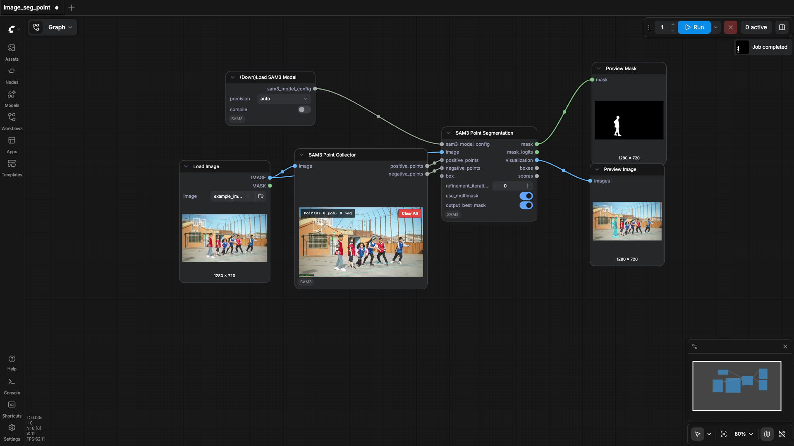
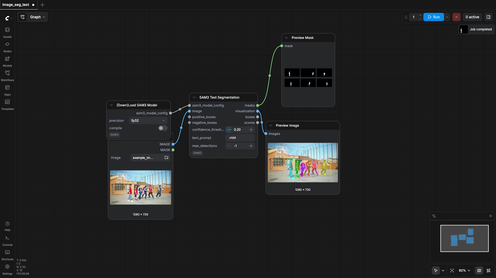
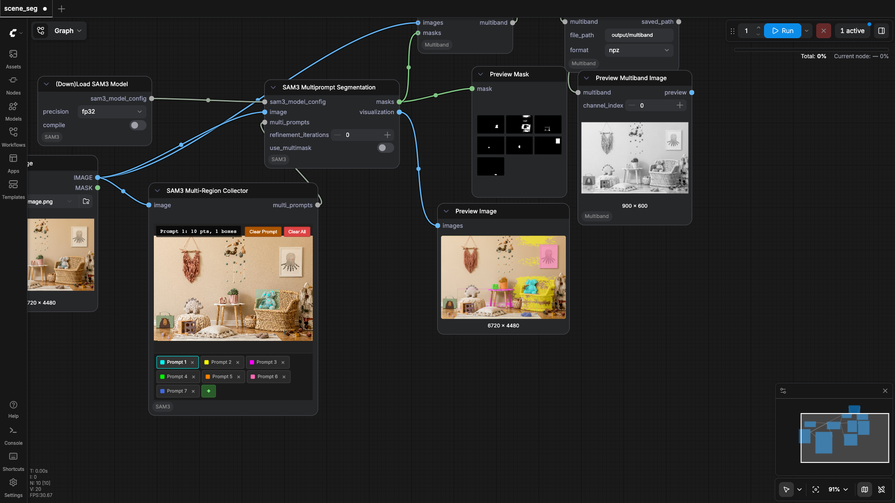
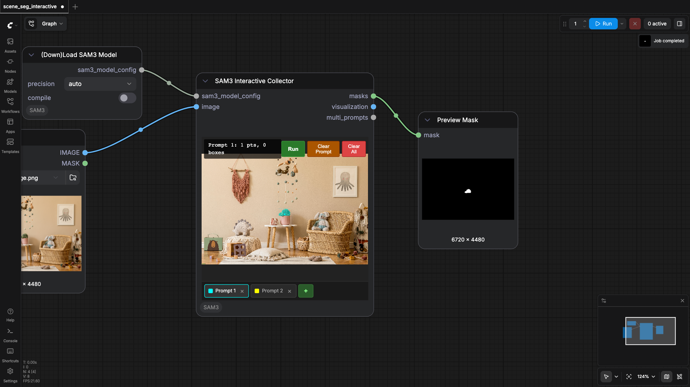

PozzettiAndrea/ComfyUI-SAM3
Test Results
2026-05-15 05:33 UTC
macOS-15.7.4-arm64-arm-64bit
arm
100.0%
4 passed
4/4 tests
Workflows
Grid
List

image_seg_point
pass
109.75s

image_seg_text
pass
143.50s

scene_seg
pass
105.39s

scene_seg_interactive
pass
112.63s
Downloaded Models
1 files · 3.2 GB
models/sam3/
3.2 GB
sam3.safetensors
3.2 GB
×
‹
›
0.0s / 0.0s
Resource Usage
RAM (GB)
VRAM (GB)